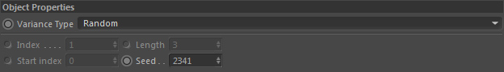

Parameters
Parameters

Variance Type
Choose a mode to determine which child object to use.
Random
A child will be selected randomly.
Row
Child objects are selected as defined by the child object order. Child 1, Child 2, Child 3...
Noise
Uses a noise value to select a child. White noise values will select the last child, black noise values will select the first child. Otherwise accordingly an interpolated child.
Index
Selects a specific child by index. Index 0 will use the first child. Index value must be smaller than available child count.
The last child is therefore selected if Index value is 'child count - 1'
Exception
Same as row but lets you select a certain amount of children (see Length) to exclude after each chosen child object.
So it selects Child 1 -> then excludes the next 3 children -> Then takes child 5 -> excludes next 3...
Series
This lets you choose a series (see Length) of children to select.
For example starting at the second child -> then selects 'Length' amount of children -> starting at second child again -> selects 'Length' amount of children...
Elevation
Lets you control which child to select based on elevation. Selecting this mode will reveal additional settings in the AM.
Index
Only if 'Variance Type' = Index
The child index 0 is the first child. Maximum possible value is 'amount of child objects - 1'.
Length
Only if 'Variance Type' = Exception, Series
Defines the length (amount of child objects) of a series or an exception series.
Start index
Only if 'Variance Type' = Row, Exception, Series
The start child object index to start the row, exception or series from.
Index 0 is the first child. Maximum possible value is 'amount of child objects - 1'.
Seed
Only if 'Variance Type' = Random, Noise
The seed value for the internal random or noise generator.
Low
Only if 'Variance Type' = Elevation
The minimum height for selection control range (see Distribution).
High
Only if 'Variance Type' = Elevation
The maximum height for selection control range (see Distribution).
Distribution
Only if 'Variance Type' = Elevation
Controls which child to select on the specified height range.
By default (a linear spline curve) for the minimum height the first child is selected, for the maximum the last child is selected and inbetween the minimum and maximum the other children accordingly.